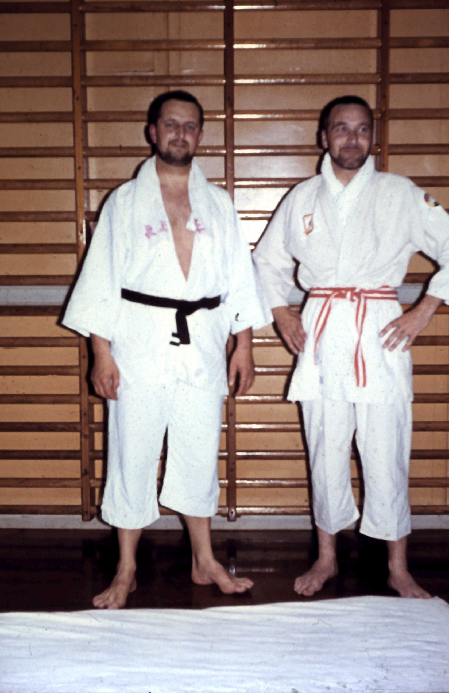

One of the roots of the club’s ju-jitsu
Christian Christiansen began learning ju-jitsu as a soldier at Værløse Air Base under Captain Knud Janson, who later became a major. This was 13 years before the club was founded.
A CLUB ROOTED ON AMAGER
Our story begins with a desire to learn self-defence. It continues every time we meet on the mat.

THE BEGINNING
Aiki-do is one of Denmark’s oldest active ju-jitsu clubs.
The need for a club grew out of a series of self-defence courses in the early 1960s. Classes in self-defence for women were particularly popular.
In 1965, Algot Jensen and Øjvind Rasmussen founded the club as the Aiki-do Judo Club. Together with Børge Olsson and Henrik Petersen, they were the driving forces in its early years.
Børge Olsson was a driving instructor in Kastrup and held a judo championship title. The other three worked for the tramways.
FROM THEN TO NOW
Christian Christiansen began learning ju-jitsu as a soldier at Værløse Air Base under Captain Knud Janson, who later became a major. This was 13 years before the club was founded.
Algot Jensen and Øjvind Rasmussen founded the club. Christian Christiansen joined about six months later. He also worked for the tramways.
Børge Olsson, Henrik Petersen and Øjvind Rasmussen left for various reasons during the club’s first year. Algot Jensen and Christian Christiansen then led the club through its first 25 years.
Training began at Skolen ved Sundet. The club later trained at venues including Skottegårdsskolen and Tårnby Gymnasium before finding its current home at Tårnby Skole.
Today we practise ju-jitsu in the girls’ gymnasium at Tårnby Skole. We offer classes for adults and for children and teens aged 8 and up.
See our training timesBECOME PART OF THE STORY
We remain a local club rooted on Amager. Beginners and experienced students meet here to practise self-defence and develop their ju-jitsu.
You can start from age 8. Bring your training clothes and come along to give it a try.
Meet the people behind the clubTÅRNBY SKOLE · GIRLS’ GYMNASIUM
Ask us anything, or come along to training.